500 Queens VC NEW Long
Read the complete supplied reference online, or download the original file.
Original source material, including its historical dates and proposals.
Slide 1 of 20
{kind=link}
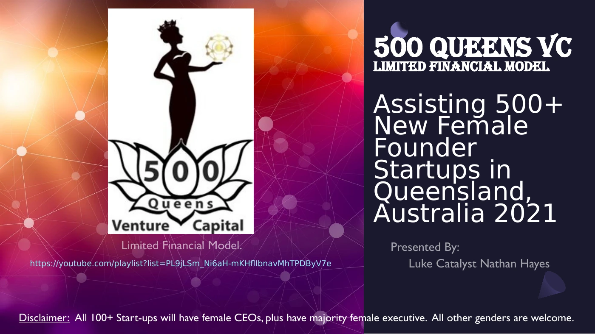
Read selectable text for slide 1
Text extracted from this page. Use the page image for its original layout, tables and figures.
limited FinanCial model
Assisting 500+
New Female
Founder
Startups in
Queensland,
Australia 2021
Presented By:
Luke Catalyst Nathan Hayes
https://youtube.com/playlist?list=PL9jLSm_Ni6aH-mKHflIbnavMhTPDByV7e
Limited Financial Model.
Disclaimer: All 100+ Start-ups will have female CEOs, plus have majority female executive. All other genders are welcome.
Slide 2 of 20
{kind=link}
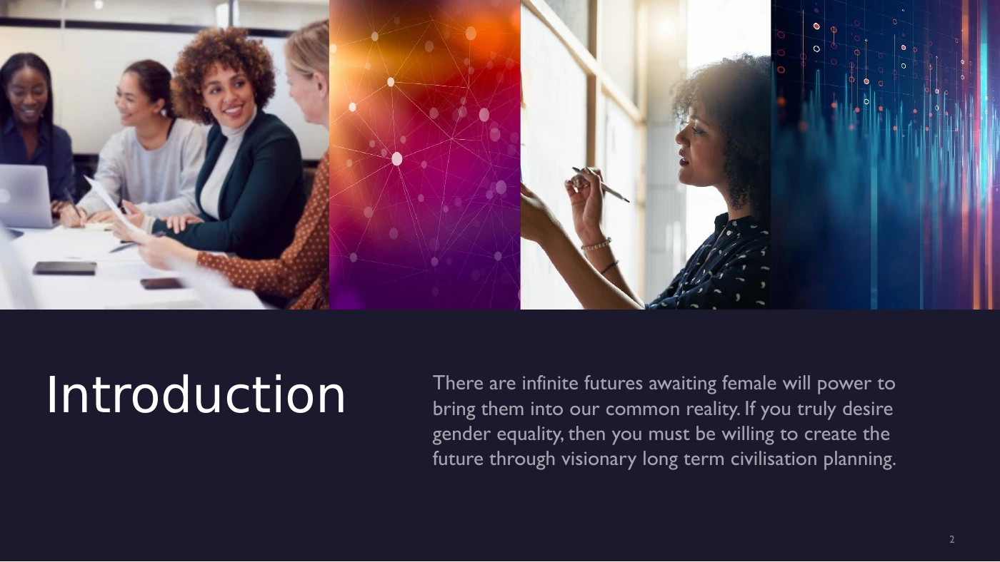
Read selectable text for slide 2
Text extracted from this page. Use the page image for its original layout, tables and figures.
2
There are infinite futures awaiting female will power to
bring them into our common reality. If you truly desire
gender equality, then you must be willing to create the
future through visionary long term civilisation planning.
Slide 3 of 20
{kind=link}
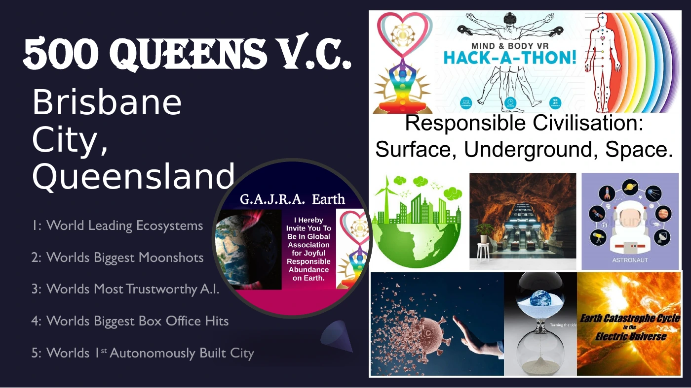
Read selectable text for slide 3
Text extracted from this page. Use the page image for its original layout, tables and figures.
City,
Queensland.
1: World Leading Ecosystems
2: Worlds Biggest Moonshots
3: Worlds Most Trustworthy A.I.
4: Worlds Biggest Box Office Hits
5: Worlds 1
st
Autonomously Built City
500 Queens V.C.
Slide 4 of 20
{kind=link}
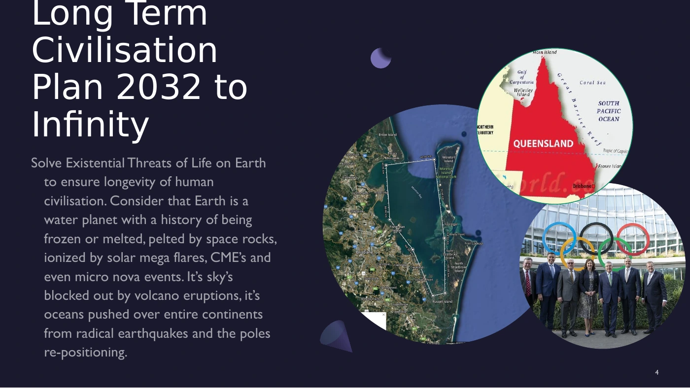
Read selectable text for slide 4
Text extracted from this page. Use the page image for its original layout, tables and figures.
Civilisation
Plan 2032 to
Infinity
Solve Existential Threats of Life on Earth
to ensure longevity of human
civilisation. Consider that Earth is a
water planet with a history of being
frozen or melted, pelted by space rocks,
ionized by solar mega flares, CME’s and
even micro nova events. It’s sky’s
blocked out by volcano eruptions, it’s
oceans pushed over entire continents
from radical earthquakes and the poles
re-positioning.
4
Slide 5 of 20
{kind=link}
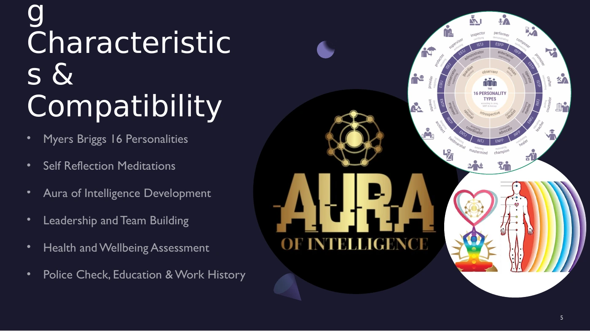
Read selectable text for slide 5
Text extracted from this page. Use the page image for its original layout, tables and figures.
g
Characteristic
s &
Compatibility
•
Myers Briggs 16 Personalities
•
Self Reflection Meditations
•
Aura of Intelligence Development
•
Leadership and T eam Building
•
Health and Wellbeing Assessment
•
Police Check, Education & Work History
5
Slide 6 of 20
{kind=link}
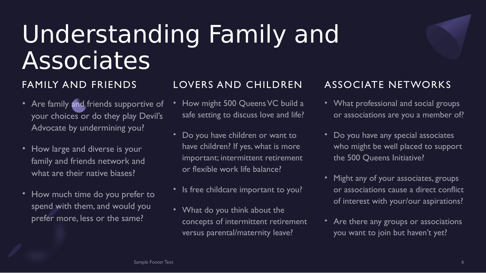
Read selectable text for slide 6
Text extracted from this page. Use the page image for its original layout, tables and figures.
Associates
FAMILY AND FRIENDS
•
Are family and friends supportive of
your choices or do they play Devil’s
Advocate by undermining you?
•
How large and diverse is your
family and friends network and
what are their native biases?
•
How much time do you prefer to
spend with them, and would you
prefer more, less or the same? LOVERS AND CHILDREN
•
How might 500 Queens VC build a
safe setting to discuss love and life?
•
Do you have children or want to
have children? If yes, what is more
important; intermittent retirement
or flexible work life balance?
•
Is free childcare important to you?
•
What do you think about the
concepts of intermittent retirement
versus parental/maternity leave? ASSOCIATE NETWORKS
•
What professional and social groups
or associations are you a member of?
•
Do you have any special associates
who might be well placed to support
the 500 Queens Initiative?
•
Might any of your associates, groups
or associations cause a direct conflict
of interest with your/our aspirations?
•
Are there any groups or associations
you want to join but haven’t yet?
Sample Footer T ext
6
Slide 7 of 20
{kind=link}
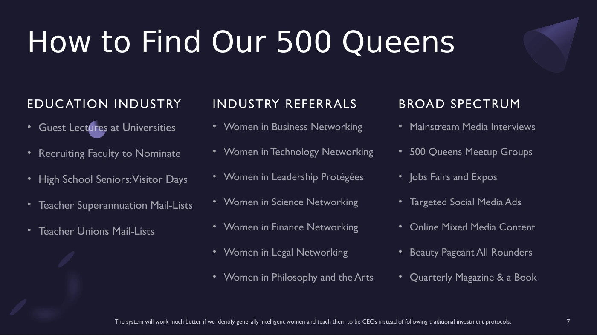
Read selectable text for slide 7
Text extracted from this page. Use the page image for its original layout, tables and figures.
EDUCATION INDUSTRY
•
Guest Lectures at Universities
•
Recruiting Faculty to Nominate
•
High School Seniors: Visitor Days
•
T eacher Superannuation Mail-Lists
•
T eacher Unions Mail-Lists INDUSTRY REFERRALS
•
Women in Business Networking
•
Women in T echnology Networking
•
Women in Leadership Protégées
•
Women in Science Networking
•
Women in Finance Networking
•
Women in Legal Networking
•
Women in Philosophy and the Arts BROAD SPECTRUM
•
Mainstream Media Interviews
•
500 Queens Meetup Groups
•
Jobs Fairs and Expos
•
Targeted Social Media Ads
•
Online Mixed Media Content
•
Beauty Pageant All Rounders
•
Quarterly Magazine & a Book
The system will work much better if we identify generally intelligent women and teach them to be CEOs instead of following traditional investment protocols.
7
Slide 8 of 20
{kind=link}
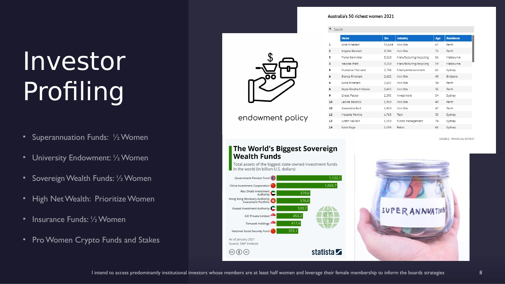
Read selectable text for slide 8
Text extracted from this page. Use the page image for its original layout, tables and figures.
Profiling
•
Superannuation Funds: ½ Women
•
University Endowment: ½ Women
•
Sovereign Wealth Funds: ½ Women
•
High Net Wealth: Prioritize Women
•
Insurance Funds: ½ Women
•
Pro Women Crypto Funds and Stakes
8
I intend to access predominantly institutional investors whose members are at least half women and leverage their female membership to inform the boards strategies
Slide 9 of 20
{kind=link}
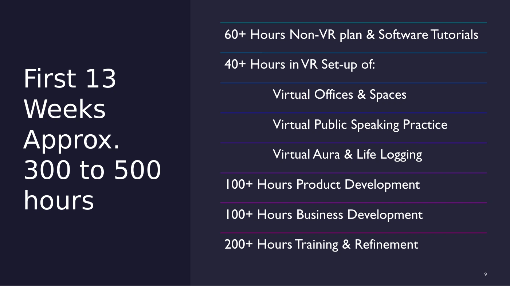
Read selectable text for slide 9
Text extracted from this page. Use the page image for its original layout, tables and figures.
Weeks
Approx.
300 to 500
hours
9
60+ Hours Non-VR plan & Software T utorials
40+ Hours in VR Set-up of:
Virtual Offices & Spaces
Virtual Public Speaking Practice
Virtual Aura & Life Logging
100+ Hours Product Development
100+ Hours Business Development
200+ Hours Training & Refinement
Slide 10 of 20
{kind=link}
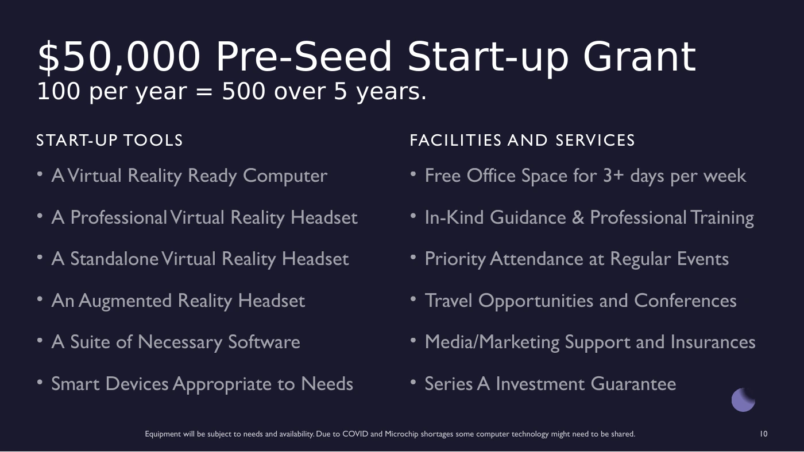
Read selectable text for slide 10
Text extracted from this page. Use the page image for its original layout, tables and figures.
100 per year = 500 over 5 years.
START-UP TOOLS
•
A Virtual Reality Ready Computer
•
A Professional Virtual Reality Headset
•
A Standalone Virtual Reality Headset
•
An Augmented Reality Headset
•
A Suite of Necessary Software
•
Smart Devices Appropriate to Needs FACILITIES AND SERVICES
•
Free Office Space for 3+ days per week
•
In-Kind Guidance & Professional Training
•
Priority Attendance at Regular Events
•
Travel Opportunities and Conferences
•
Media/Marketing Support and Insurances
•
Series A Investment Guarantee
Equipment will be subject to needs and availability. Due to COVID and Microchip shortages some computer technology might need to be shared.
10
Slide 11 of 20
{kind=link}
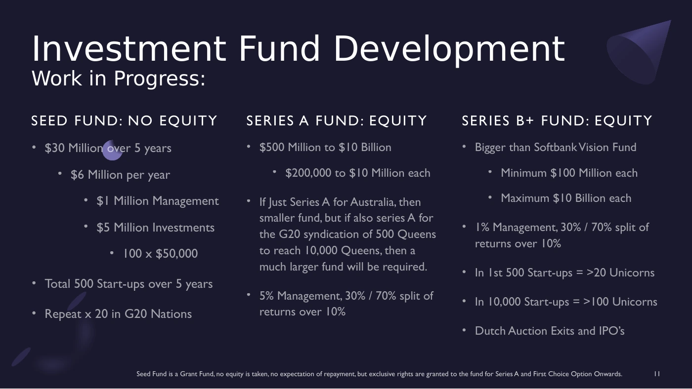
Read selectable text for slide 11
Text extracted from this page. Use the page image for its original layout, tables and figures.
Work in Progress:
SEED FUND: NO EQUITY
•
$30 Million over 5 years
•
$6 Million per year
•
$1 Million Management
•
$5 Million Investments
•
100 x $50,000
•
T otal 500 Start-ups over 5 years
•
Repeat x 20 in G20 Nations SERIES A FUND: EQUITY
•
$500 Million to $10 Billion
•
$200,000 to $10 Million each
•
If Just Series A for Australia, then
smaller fund, but if also series A for
the G20 syndication of 500 Queens
to reach 10,000 Queens, then a
much larger fund will be required.
•
5% Management, 30% / 70% split of
returns over 10% SERIES B+ FUND: EQUITY
•
Bigger than Softbank Vision Fund
•
Minimum $100 Million each
•
Maximum $10 Billion each
•
1% Management, 30% / 70% split of
returns over 10%
•
In 1st 500 Start-ups = >20 Unicorns
•
In 10,000 Start-ups = >100 Unicorns
•
Dutch Auction Exits and IPO’s
Seed Fund is a Grant Fund, no equity is taken, no expectation of repayment, but exclusive rights are granted to the fund for Series A and First Choice Option Onwards.
11
Slide 12 of 20
{kind=link}
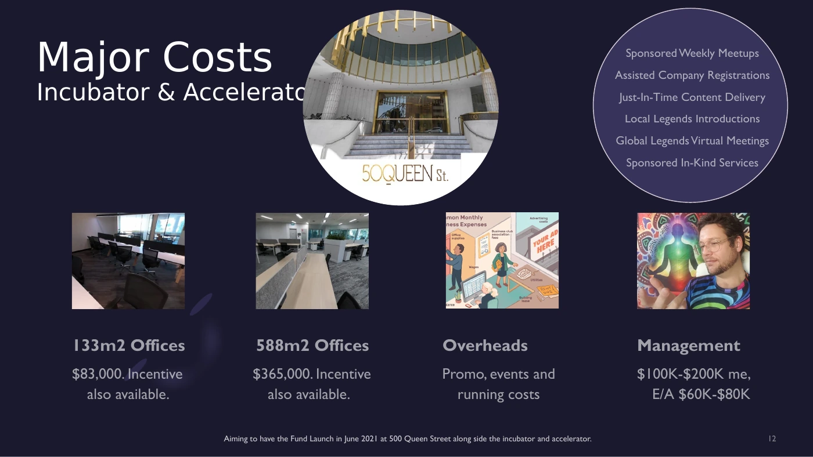
Read selectable text for slide 12
Text extracted from this page. Use the page image for its original layout, tables and figures.
Incubator & Accelerator
133m2 Offices
$83,000. Incentive
also available.
588m2 Offices
$365,000. Incentive
also available.
Overheads
Promo, events and
running costs
Aiming to have the Fund Launch in June 2021 at 500 Queen Street along side the incubator and accelerator.
12
St.
Sponsored Weekly Meetups
Assisted Company Registrations
Just-In-Time Content Delivery
Local Legends Introductions
Global Legends Virtual Meetings
Sponsored In-Kind Services
Management
$100K-$200K me,
E/A $60K-$80K
Slide 13 of 20
{kind=link}
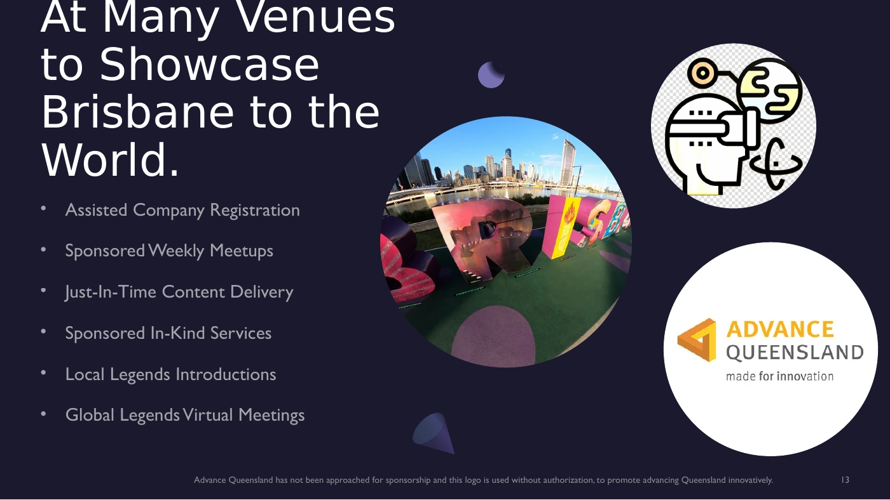
Read selectable text for slide 13
Text extracted from this page. Use the page image for its original layout, tables and figures.
to Showcase
Brisbane to the
World.
•
Assisted Company Registration
•
Sponsored Weekly Meetups
•
Just-In-Time Content Delivery
•
Sponsored In-Kind Services
•
Local Legends Introductions
•
Global Legends Virtual Meetings
Advance Queensland has not been approached for sponsorship and this logo is used without authorization, to promote advancing Queensland innovatively.
13
Slide 14 of 20
{kind=link}
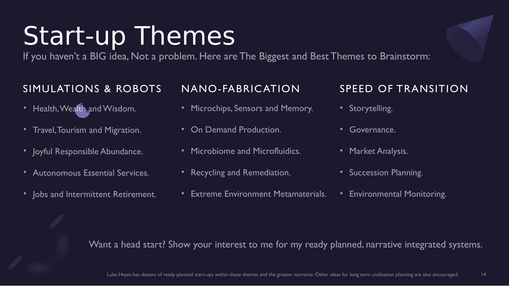
Read selectable text for slide 14
Text extracted from this page. Use the page image for its original layout, tables and figures.
SIMULATIONS & ROBOTS
•
Health, Wealth and Wisdom.
•
Travel, T ourism and Migration.
•
Joyful Responsible Abundance.
•
Autonomous Essential Services.
•
Jobs and Intermittent Retirement. NANO-FABRICATION
•
Microchips, Sensors and Memory.
•
On Demand Production.
•
Microbiome and Microfluidics.
•
Recycling and Remediation.
•
Extreme Environment Metamaterials. SPEED OF TRANSITION
•
Storytelling.
•
Governance.
•
Market Analysis.
•
Succession Planning.
•
Environmental Monitoring.
Luke Hayes has dozens of ready planned start-ups within these themes and the greater narrative. Other ideas for long term civilisation planning are also encouraged.
14
If you haven’t a BIG idea, Not a problem. Here are The Biggest and Best Themes to Brainstorm:
Want a head start? Show your interest to me for my ready planned, narrative integrated systems.
Slide 15 of 20
{kind=link}
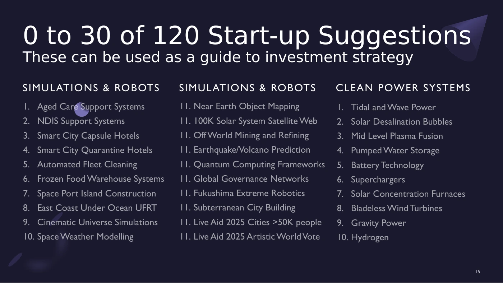
Read selectable text for slide 15
Text extracted from this page. Use the page image for its original layout, tables and figures.
These can be used as a guide to investment strategy
1.
Aged Care Support Systems
2.
NDIS Support Systems
3.
Smart City Capsule Hotels
4.
Smart City Quarantine Hotels
5.
Automated Fleet Cleaning
6.
Frozen Food Warehouse Systems
7.
Space Port Island Construction
8.
East Coast Under Ocean UFRT
9.
Cinematic Universe Simulations
10.
Space Weather Modelling
SIMULATIONS & ROBOTS CLEAN POWER SYSTEMS
15
11.
Near Earth Object Mapping
11.
100K Solar System Satellite Web
11.
Off World Mining and Refining
11.
Earthquake/Volcano Prediction
11.
Quantum Computing Frameworks
11.
Global Governance Networks
11.
Fukushima Extreme Robotics
11.
Subterranean City Building
11.
Live Aid 2025 Cities >50K people
11.
Live Aid 2025 Artistic World Vote
1.
Tidal and Wave Power
2.
Solar Desalination Bubbles
3.
Mid Level Plasma Fusion
4.
Pumped Water Storage
5.
Battery T echnology
6.
Superchargers
7.
Solar Concentration Furnaces
8.
Bladeless Wind T urbines
9.
Gravity Power
10.
HydrogenSIMULATIONS & ROBOTS
Slide 16 of 20
{kind=link}
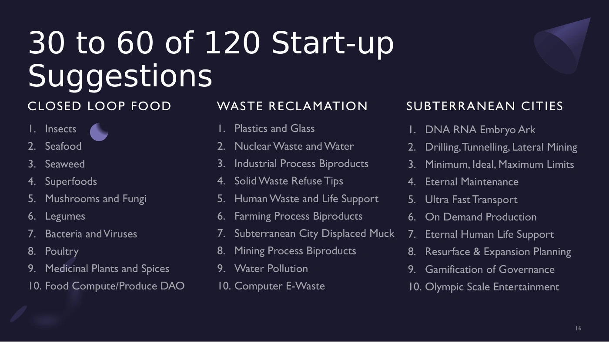
Read selectable text for slide 16
Text extracted from this page. Use the page image for its original layout, tables and figures.
Suggestions
1.
Insects
2.
Seafood
3.
Seaweed
4.
Superfoods
5.
Mushrooms and Fungi
6.
Legumes
7.
Bacteria and Viruses
8.
Poultry
9.
Medicinal Plants and Spices
10.
Food Compute/Produce DAO
WASTE RECLAMATION SUBTERRANEAN CITIES
16
1.
Plastics and Glass
2.
Nuclear Waste and Water
3.
Industrial Process Biproducts
4.
Solid Waste Refuse Tips
5.
Human Waste and Life Support
6.
Farming Process Biproducts
7.
Subterranean City Displaced Muck
8.
Mining Process Biproducts
9.
Water Pollution
10.
Computer E-Waste
1.
DNA RNA Embryo Ark
2.
Drilling, T unnelling, Lateral Mining
3.
Minimum, Ideal, Maximum Limits
4.
Eternal Maintenance
5.
Ultra Fast Transport
6.
On Demand Production
7.
Eternal Human Life Support
8.
Resurface & Expansion Planning
9.
Gamification of Governance
10.
Olympic Scale EntertainmentCLOSED LOOP FOOD
Slide 17 of 20
{kind=link}
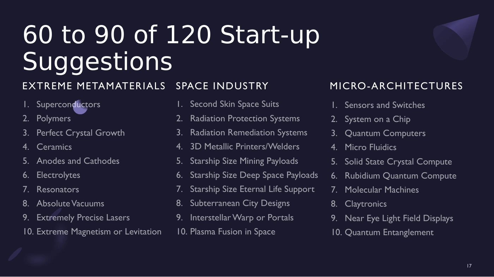
Read selectable text for slide 17
Text extracted from this page. Use the page image for its original layout, tables and figures.
Suggestions
1.
Superconductors
2.
Polymers
3.
Perfect Crystal Growth
4.
Ceramics
5.
Anodes and Cathodes
6.
Electrolytes
7.
Resonators
8.
Absolute Vacuums
9.
Extremely Precise Lasers
10.
Extreme Magnetism or Levitation
SPACE INDUSTRY MICRO-ARCHITECTURES
17
1.
Second Skin Space Suits
2.
Radiation Protection Systems
3.
Radiation Remediation Systems
4.
3D Metallic Printers/Welders
5.
Starship Size Mining Payloads
6.
Starship Size Deep Space Payloads
7.
Starship Size Eternal Life Support
8.
Subterranean City Designs
9.
Interstellar Warp or Portals
10.
Plasma Fusion in Space
1.
Sensors and Switches
2.
System on a Chip
3.
Quantum Computers
4.
Micro Fluidics
5.
Solid State Crystal Compute
6.
Rubidium Quantum Compute
7.
Molecular Machines
8.
Claytronics
9.
Near Eye Light Field Displays
10.
Quantum EntanglementEXTREME METAMATERIALS
Slide 18 of 20
{kind=link}
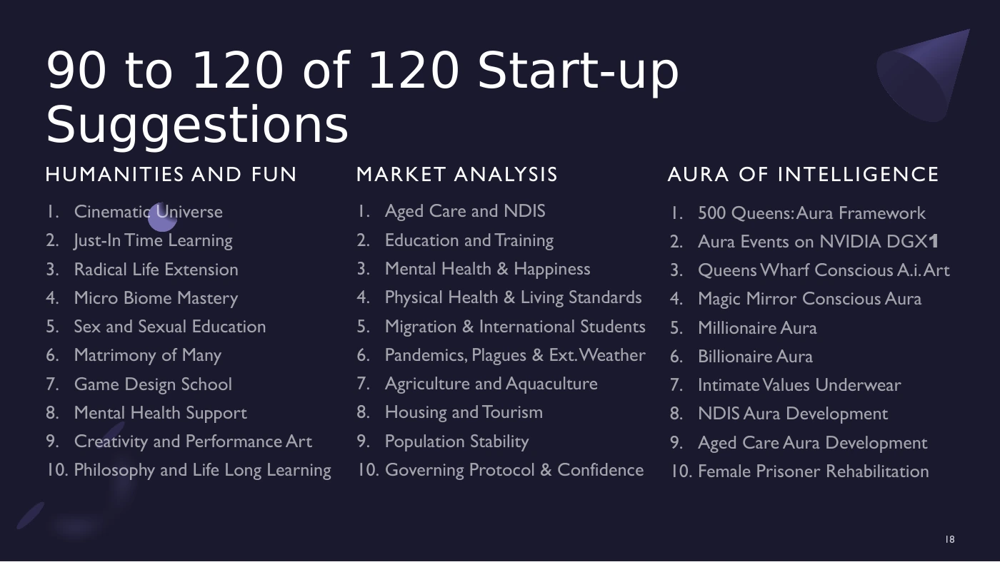
Read selectable text for slide 18
Text extracted from this page. Use the page image for its original layout, tables and figures.
Suggestions
1.
Cinematic Universe
2.
Just-In Time Learning
3.
Radical Life Extension
4.
Micro Biome Mastery
5.
Sex and Sexual Education
6.
Matrimony of Many
7.
Game Design School
8.
Mental Health Support
9.
Creativity and Performance Art
10.
Philosophy and Life Long Learning
18
HUMANITIES AND FUN MARKET ANALYSIS AURA OF INTELLIGENCE
1.
Aged Care and NDIS
2.
Education and Training
3.
Mental Health & Happiness
4.
Physical Health & Living Standards
5.
Migration & International Students
6.
Pandemics, Plagues & Ext. Weather
7.
Agriculture and Aquaculture
8.
Housing and T ourism
9.
Population Stability
10.
Governing Protocol & Confidence
1.
500 Queens: Aura Framework
2.
Aura Events on NVIDIA DGX
1
3.
Queens Wharf Conscious A.i. Art
4.
Magic Mirror Conscious Aura
5.
Millionaire Aura
6.
Billionaire Aura
7.
Intimate Values Underwear
8.
NDIS Aura Development
9.
Aged Care Aura Development
10.
Female Prisoner Rehabilitation
Slide 19 of 20
{kind=link}
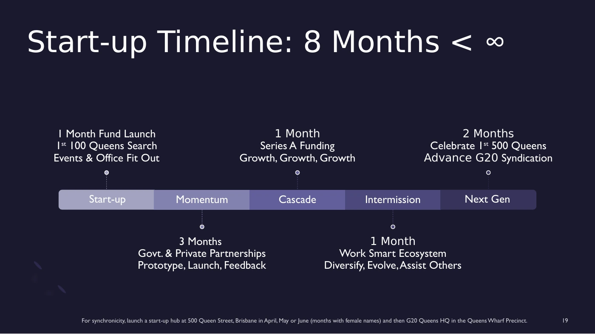
Read selectable text for slide 19
Text extracted from this page. Use the page image for its original layout, tables and figures.
Start-up
1 Month Fund Launch
1st 100 Queens Search
Events & Office Fit Out
Momentum
3 Months
Govt. & Private Partnerships
Prototype, Launch, Feedback
Cascade
1 Month
Series A Funding
Growth, Growth, Growth
Intermission
1 Month
Work Smart Ecosystem
Diversify, Evolve, Assist Others
Next Gen
2 Months
Celebrate 1st 500 Queens
Advance G20 Syndication
For synchronicity, launch a start-up hub at 500 Queen Street, Brisbane in April, May or June (months with female names) and then G20 Queens HQ in the Queens Wharf Precinct.
19
Slide 20 of 20
{kind=link}
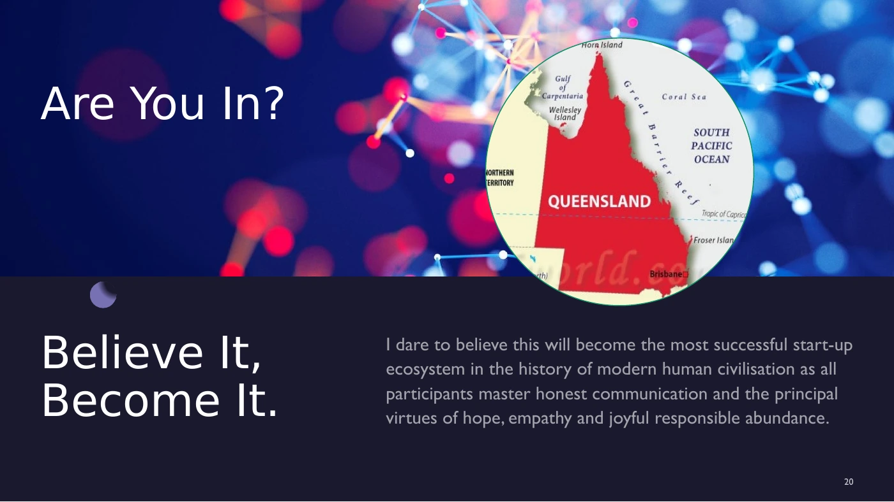
Read selectable text for slide 20
Text extracted from this page. Use the page image for its original layout, tables and figures.
Become It.
I dare to believe this will become the most successful start-up
ecosystem in the history of modern human civilisation as all
participants master honest communication and the principal
virtues of hope, empathy and joyful responsible abundance.
20
Are You In?